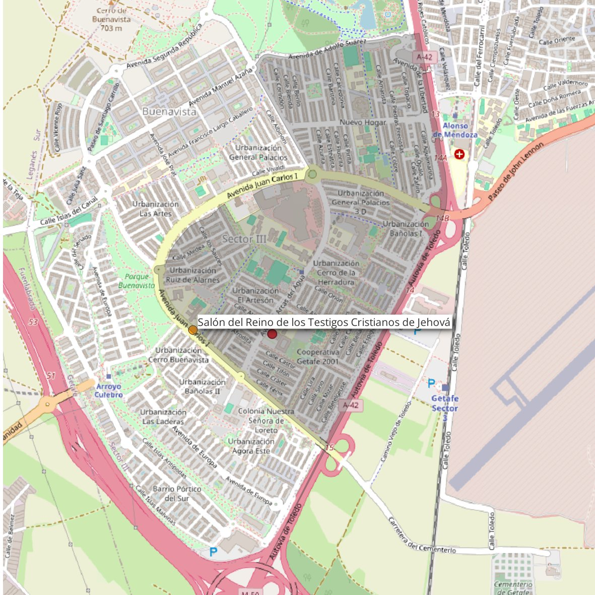
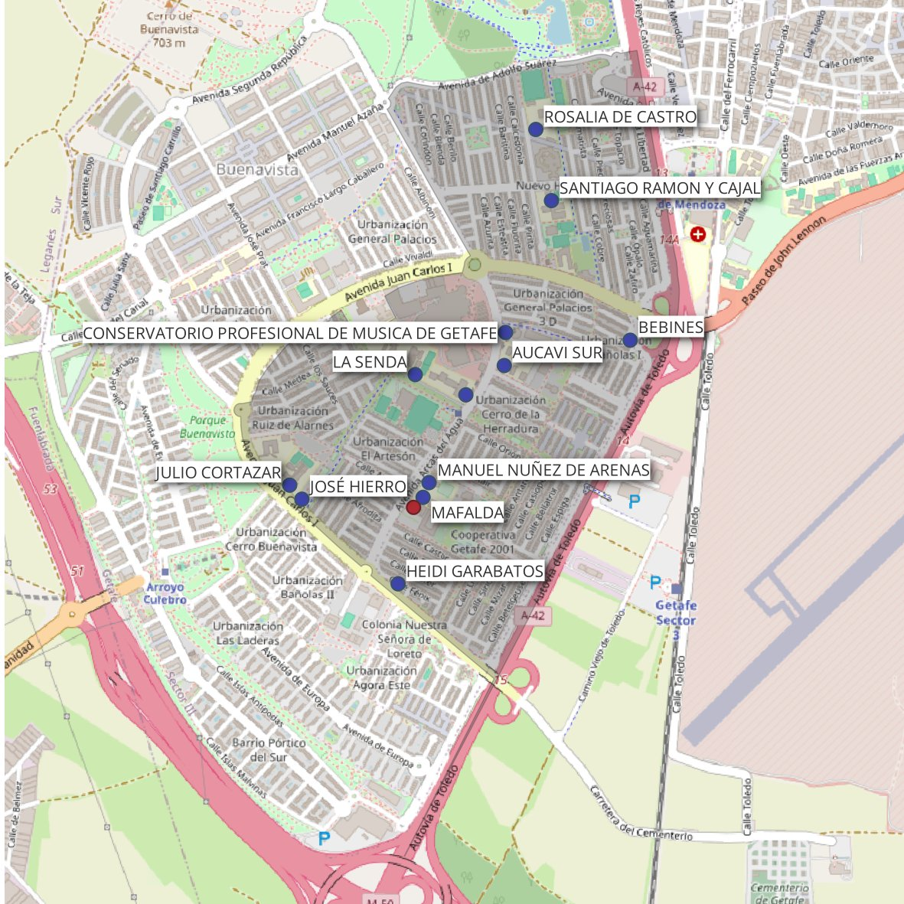

Puntos de interés en el territorio parroquial
Parroquia Nuestra Señora de Buenavista (Getafe) · Arciprestazgo de Getafe
Entidades religiosas no católicas

1 entidad religiosa no católica en el territorio de la parroquia.
Testigos de Jehová (1)
- Salón del Reino de los Testigos Cristianos de JehováAvenida Juan Carlos I 6, Getafe
Fuente: Registro de Entidades Religiosas del Ministerio de la Presidencia, Justicia y Relaciones con las Cortes. Situación en el mapa: dirección geocodificada con CartoCiudad (IGN) o Nominatim (OpenStreetMap).
Centros educativos

12 centros educativos en el territorio de la parroquia (público: 9, privado: 2, privado concertado: 1).
| Centro | Tipo | Titularidad | Domicilio | Web |
|---|---|---|---|---|
| AUCAVI SUR | Centro privado de educación especial | Privado concertado | Avenida de las Arcos del Agua, 3, 28905 Getafe | Página web |
| BEBINES | Escuela infantil privada | Privado | Avenida de la Libertad, 6, 28905 Getafe | Página web |
| CENTRO DE FORMACION EN TECNOLOGIAS DE LA INFORMACION Y LAS COMUNICACIONES MADRID SUR | Centro de formación para el empleo | Público | Avenida de las Arcas del Agua (Sector 3), 2, 28905 Getafe | Página web |
| CONSERVATORIO PROFESIONAL DE MUSICA DE GETAFE | Conservatorio profesional de música | Público | Avenida de las Arcas del Agua, 1, 28905 Getafe | Página web |
| HEIDI GARABATOS | Escuela infantil privada | Privado | Calle Fénix, s/n, 28905 Getafe | |
| JOSÉ HIERRO | Instituto de educación secundaria | Público | Avenida de Juan Carlos I, 9, 28905 Getafe | Página web |
| JULIO CORTAZAR | Colegio de educación infantil y primaria | Público | Avenida de Juan Carlos I, 7, 28905 Getafe | Página web |
| LA SENDA | Instituto de educación secundaria | Público | Senda de Mafalda, 2, 28905 Getafe | Página web |
| MAFALDA | Escuela infantil | Público | Avenida de las Arcas del Agua, 11, 28905 Getafe | Página web |
| MANUEL NUÑEZ DE ARENAS | Colegio de educación infantil y primaria | Público | Avenida de las Arcas del Agua, 9, 28905 Getafe | Página web |
| ROSALIA DE CASTRO | Colegio de educación infantil y primaria | Público | Vereda del Camuerzo, 4, 28905 Getafe | Página web |
| SANTIAGO RAMON Y CAJAL | Colegio de educación especial | Público | Avenida Vereda del Camuerzo, 28905 Getafe | Página web |
Fuente: registro de centros educativos de la Comunidad de Madrid. Solo se recogen los centros en situación de alta.